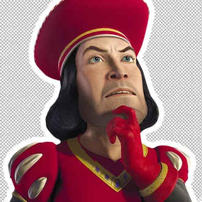
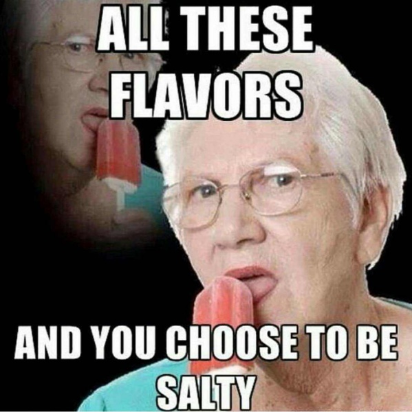

Cherry Blossom Festival
-
OnlineThe Washington Post - 2hDream Face Reveal Garners 20 Million Viewers
-
FairytailsThe Far Far Away Times - 1hLord Farquaad's Reaction to Being Compared to Dream
-
MarsNBC News - 5hrsScientists Find Evidence of Ancient Flooding on Mars

-
GrandmotherWho Cares News - 6hrsLocal Grandmother Stubs Toe
- Who to follow
-